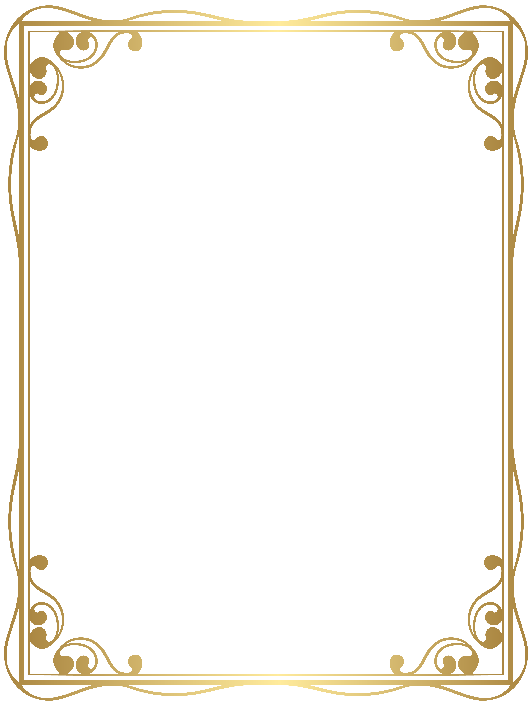

Foto con marco
Abre la cámara, posa y guarda tu foto.
Iniciando cámara...
Cambiar cámara
Pantalla completa
Tomar otra
Guardar foto
Tip: usa un PNG transparente como
frame.png
para que el marco quede encima de la foto.